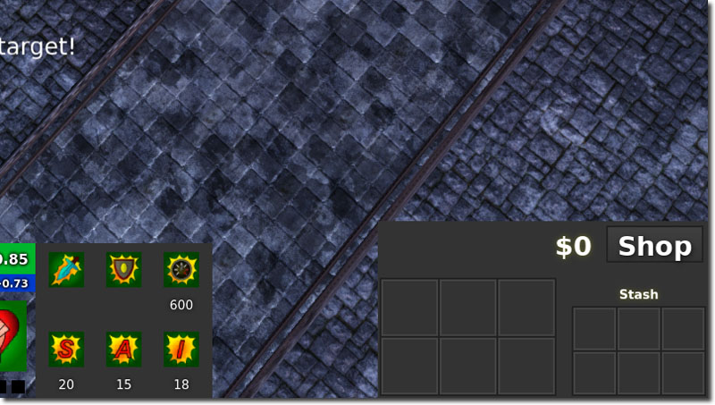
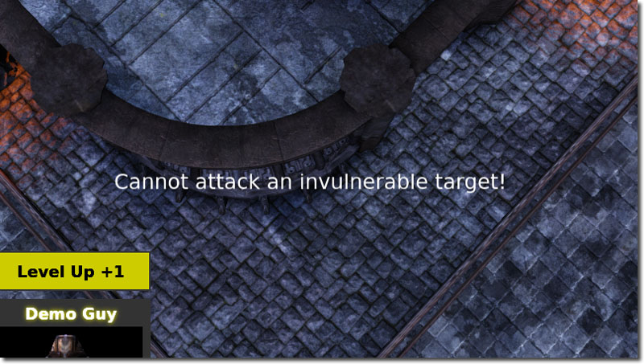

UDN
Search public documentation:
MOBAKitUICH
English Translation
한국어
Interested in the Unreal Engine?
Visit the Unreal Technology site.
Looking for jobs and company info?
Check out the Epic games site.
Questions about support via UDN?
Contact the UDN Staff
한국어
Interested in the Unreal Engine?
Visit the Unreal Technology site.
Looking for jobs and company info?
Check out the Epic games site.
Questions about support via UDN?
Contact the UDN Staff
MOBA 初学者工具包 - 用户界面
于2012 年 5 月针对 UDK 进行最后测试
概述
MOBA(多人在线联机竞技游戏)一般在HUD上显示很多信息。MOBA初学者工具包中的所有HUD都是在Scaleform中完成了，尽管HUD类仍然存在；但它仅是向Scaleform中传递命令或者传递Canvas（画布）实例的shell（壳）。HUD的某些部分已经在其它文档中进行了描述，所以本文中介绍了没有在专门地方介绍过的区域。
Hero(英雄)区域
 英雄区域包含了关于英雄的状态。它显示了英雄的生命值、级别、法力、头像、法术、统计数据。英雄区域的大部分方框GFx控件都缓存在 UDKMOBAGFxHUD::ConfigHero() 中。大部分核心逻辑都在 UDKMOBAGFxHUD::UpdateCurrentHero() 函数中完成，由 UDKMOBAGFxHUD::Tick() 调用该函数。
英雄区域包含了关于英雄的状态。它显示了英雄的生命值、级别、法力、头像、法术、统计数据。英雄区域的大部分方框GFx控件都缓存在 UDKMOBAGFxHUD::ConfigHero() 中。大部分核心逻辑都在 UDKMOBAGFxHUD::UpdateCurrentHero() 函数中完成，由 UDKMOBAGFxHUD::Tick() 调用该函数。
生命值
生命值部分有三部分组成。- 生命值条
- 当前生命值的文本
- 再生的生命值的文本
法力
生命值部分由三部分组成。- 法力条
- 当前法力的文本
- 再生法力的文本
头像
根据平台不同使用的不同头像。在移动设备平台上，使用静态的预渲染的图像，而在PC平台上使用实时动态渲染目标来创建具有动画效果的头像。这是通过 UDKMOBAGFxHUD::SetHeroPortrait() 函数处理的，它的作用是给那个函数中的参数Texture2D设置贴图资源。 在移动设备平台上， 使用 UDKMOBAHUD_Mobile::PostRender() 来设置头像。此时，该函数所做的是给GFx空间设置一个贴图。 在PC平台上， 使用 UDKMOBAHUD_PC::PostRender() 来设置头像。在PC平台上，通过捕获在地图上的某个地方随机地生成的动画骨架网格物体创建一个离屏渲染目标，以便该渲染目标不干扰地图。这样，不必预渲染头像视频就可以创建一个带动画的头像了。这也允许您再不需修改头像视频的情况下修改英雄的美术效果。您也可以包含其他奇特的特效，比如粒子特效、光照效果等。法术
法术部分通过复杂的Scaleform控件动态创建。这部分在 UDKMOBAGFxHUD::ConfigSpells() 函数中进行处理。 UDKMOBAGFxHUD::ConfigSpells() 迭代英雄法术并动态地附加新的GFx控件到HUD上。然后，它将这些按钮和适当的事件监听器相绑定并设置其他内容。 事件监听器处理提升法术级别、触发法术等方面的内容。统计数据
统计数据部分几乎全是文本域，随着英雄的更新而更新。统计数据主要在 UDKMOBAGFxHUD::UpdateHeroStats() 进行更新，该函数简单地从英雄那里获得数值并将它们赋予 UDKMOBAGFxHUD::ConfigHero() 中缓存的文本域。武器库区域

武器库区域包含了玩家当前武器库道具及玩家的隐藏武器库道具。这些道具都在Scaleform中进行预定义，并使用复杂的视频剪辑处理这些道具。使用文本域来维护玩家所具有的金币量，商店按钮仅是个简单的按钮，它通过更新按钮的状态来预示玩家是否在商店区域中。这些都缓存在 UDKMOBAGFxHUD::ConfigInventory() 中。当前武器库道具
当前武器道具图标位于左侧，且比隐藏的武器道具图标大。它们是通过 UDKMOBAGFxHUD::NotifyItemReceived() 进行更新的，当武器库数组修改时从 UDKMOBAPawnReplicationInfo 中调用 UDKMOBAGFxHUD::NotifyItemReceived() 函数。该函数所做的是查找缓存的GFx武器库数组，并为各种控件赋予适当的值。隐藏的武器库插槽
该插槽的更新方式和当前武器库插槽一样。缓存文本域
这是通过 UDKMOBAGFxHUD::NotifyMoneyUpdated() 函数进行更新的，它仅简单地设置文本域的文本。当 UDKMOBAPlayerReplicationInfo.Money 变量改变时， UDKMOBAPlayerReplicationInfo::MoneyUpdated() 会调用 UDKMOBAGFxHUD::NotifyMoneyUpdated() 函数。商店按钮
当在 UDKMOBAGFxHUD::ConfigInventory() 中初始化这个 GFxClikWidget 时，它绑定一个事件监听器到 PressShop() 代理上。这个代理简单地切换 ShopAreaMC 的可见性。*UDKMOBAGFxHUD::ToggleShopButtonChrome()* 用于修改镀铬按钮的颜色。颜色的改变预示着玩家是否在商店体积区域内。消息

消息会动态地显示在具有设置好的文本域的动态生成的视频剪辑中。它们可以动态地淡入淡出，使得界面更加漂亮并具有动态效果。在 UDKMOBAGFxHUD 添加了一些辅助功能，以便可以轻松地添加消息。- UDKMOBAGFxHUD::AddCenteredMessage() - 该函数在屏幕的中央添加一条消息。
- UDKMOBAGFxHUD::AddMessage() - 该函数在屏幕的左侧添加一条消息。
顶部区域
 顶部区域包含了关于游戏的一般状态。最左侧的是主菜单按钮，中间是团队的击杀数、一个显示英雄图标的地方及昼夜锁、最右侧是击杀、死亡、援救的统计数据。
顶部区域包含了关于游戏的一般状态。最左侧的是主菜单按钮，中间是团队的击杀数、一个显示英雄图标的地方及昼夜锁、最右侧是击杀、死亡、援救的统计数据。
主菜单按钮
主菜单按钮缓存在 UDKMOBAGFxHUD::ConfigHUD() 中，且该按钮是通过事件监听器设置的。和按钮按下动作相绑定的事件监听器简单地打开主菜单。再打开主菜单时，它首先验证主菜单示例是否已经附加到屏幕上。如果没有，那么将创建新的主菜单实例并将其附加到菜单存储视频剪辑中。菜单存储视频剪辑的作用是维护标记的层次。创建了主菜单实例后，然后将其可见性设置为true。然后，暂停游戏。 当主菜单打开时显示两个按钮。分别是返回游戏或退出游戏。如果玩家返回游戏，那么游戏将继续且主菜单隐藏。如果玩家想退出游戏，那么首先会关闭HUD并从控制台中调用 exit 命令。